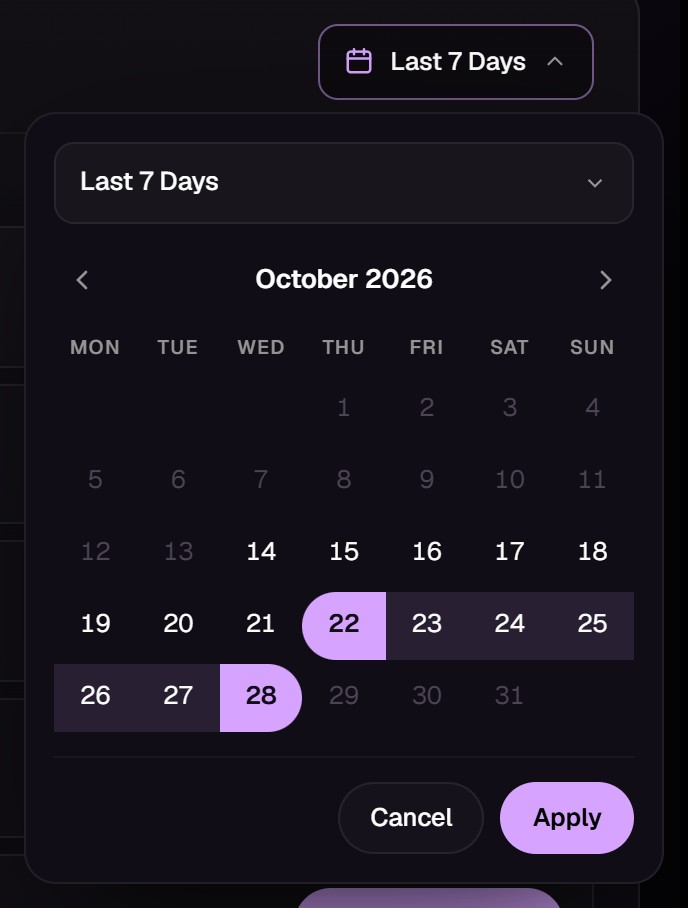
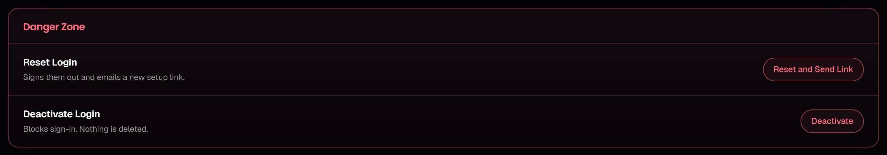

How to upload reports, add buyers, replace calls and record payments. portal.callstalk.com · October 2026
What Staff Can Do
Your top bar has Reports, Customers, New Customer and Settings. You can:
upload and delete buyers' reports, and tell buyers about new Call Summaries by email or Telegram;
add buyers and give them nicknames;
work a buyer's page: replace calls, enter calls, set billing terms, record payments, reset or deactivate their login.
Changing roles, deleting logins, Finance and the Audit Log are for admins.
First-Time Setup
Install an authenticator app on your phone (Google Authenticator, Microsoft Authenticator or Authy).
Open the setup link from your email. It works once, for 7 days.
Scan the QR code with the app (or type the setup key shown beside it).
Choose a password of at least 8 characters, type the app's 6-digit code, and press Activate Account.
The setup page.
Logging In
Go to portal.callstalk.com.
Enter your email and password, then press Log In.
Enter the 6-digit code from your app. You land on Reports.
Forgot your password? Use Forgot password? on the login page. Lost your phone? Ask an admin to reset your login.
The login page.
1Uploading Reports
There are two kinds. A Call Summary is the day's call log: the buyer sees it, and its calls set their billing for those days. A Billing Report is for the team only.
Upload a Call Summary
Open Reports. Keep Call Summary selected.
Choose the buyer under Customer (listed by nickname, e.g. HHP).
Drop the Excel or CSV file on the box. Several files at once are fine, up to 3 MB each.
Check the calls and dates the portal read from the file.
Leave Email the customer ticked to tell them. Tick Send on Telegram too if they connected it.
Press Upload Call Summary.
Their calls and balance update at once. A later export of the same day can be uploaded as it is: only its new calls are added.
A Call Summary ready to upload.
Uploaded the Wrong File?
Delete the wrong report first (× on its row under Uploaded), then upload the right one. Untick Email the customer if they shouldn't be told twice.
Upload a Billing Report
Choose Billing Report under Report Type; the rest is the same. The buyer never sees it. To enter its figures in their billing, tick Enter these calls in the customer's billing and check the rows before uploading. Excel Template gives a blank sheet in the right layout.
The Uploaded List
Below the form, every report is listed newest first. Type in Filter by customer or title to find one, and press × on its row to delete it.
2Customers
Your list of buyers. Click a name to open their page.
Customers. Type a nickname and press Save; each buyer's nickname must be unique.
Add a New Customer
Press New Customer in the top bar.
Fill in their name, email (their Login ID), company and, optionally, a nickname.
Set Price per Call, Opening Balance (negative if they owe us, 0 for a fresh start), Billing Starts and their time zone.
Press Create Login and Send Link. They're emailed a setup link that works for 7 days.
If the result says Not emailed, press Copy Link and send it to them yourself.
The New Customer form.
3A Buyer's Page
Open a buyer from Customers. Their balance is at the top right. The page has three tabs.
The page opens on Calls & Replacements.
Tab
What's on It
Calls & Replacements
Replaced Calls (with the date filter), the Calls form, and the daily table.
Billing & Payments
Billing Terms, Record a Payment, and the payments list.
Account
Details, Access, Contact Methods, Recent Activity and the Danger Zone.
The Date Filter
Replaced Calls shows the last 7 days to start with. Press the date button at its top right to change it:
Preset: open the menu at the top and pick Today, Yesterday, Last 7 Days, Last 30 Days, Last 90 Days, This Month or Last Month.
Range: click the first day, then the last day.
One day: click the same day twice.
Press Apply. The Call Summaries and the replaced calls below both follow the dates.

Last 7 Days selected.
4Replacing Calls
Buyers ask in the portal chat, giving the call's time and caller number. They usually ask 24 to 48 hours later; Friday's calls are often done on Monday or Tuesday. Always go by the day the call was made.
Open the buyer. On Calls & Replacements, set the date filter to cover the day of the call. The default 7 days covers most requests.
Under Call Summaries, press Choose Calls beside that day.
In the log, type the caller number or time in Search caller or time, e.g. 5743447831 or 15:22. Tick the call. Repeat for each call they asked about.
Check the ticked calls listed above the button (× unticks one). Add a reason if you like. The buyer sees it.
Press Replace 2 Calls, then close the log. Reply to the buyer in the chat.
Two calls ticked, with a reason.
Each replaced call comes off its day's bill at once: 23 calls with 2 replaced reads 23 − 2, and that day's balance and every later one move with it. The buyer sees the calls on their Billing page and marked in their Call Summary.
Checking and Undoing Replacements
Replaced Calls: the Call Summaries of the dates, then the calls replaced on those days.
Replaced on These Days lists the replaced calls by day, with who replaced them. Use Search to find one, or Only This Day to narrow the card to a day.
Put Back charges a call again (it asks you to confirm). Use it only for a call replaced by mistake.
A Call Summary marked Not in billing yet needs Read Calls pressed once before its calls can be replaced.
If a day shows No calls in billing, its calls must be entered first (below).
Days Without a Call Log
Most days are counted from the Call Summary. For a day with no log, use the Calls card on the same tab:
Pick the day, or click it in the daily table below.
Enter Total Calls, and a price if it differs from the usual one.
Press Save Calls.
A day counted from a call log is locked; to change it, upload the corrected log.
A day counted from its call log.
5Billing, Payments and Account
Billing & Payments
Billing Terms (left) and Record a Payment (right).
Billing Terms: price per call, opening balance, start date and time zone. A new price applies from now on; past days keep theirs.
Record a Payment: amount, the day it arrived and its status. Shown to Customer is the note they see, e.g. "Bank transfer". USDT deposits arrive by themselves; record only the others.
Payments: × deletes a payment entered by mistake.
Account and the Danger Zone
The Account tab has the buyer's details, login status, contact methods and recent activity. Actions that lock someone out sit in the red Danger Zone at the bottom. Each asks you to confirm; deleting a login is for admins.
Reset and Send Link: signs them out and emails a new setup link (lost phone, forgotten password).
Deactivate: blocks sign-in. Nothing is deleted, and it can be reactivated.

The Danger Zone, as staff see it.
Your Settings
Open Settings to change your photo or password (you'll confirm it with your app's code), and to log out. Always log out on a shared computer.
6Quick Answers
A buyer asks for a call to be replaced.
Get the day, time and caller number. Buyer's page → Calls & Replacements → Choose Calls beside that day → search the number → tick → Replace. Reply in the chat.
The day I need isn't listed under Call Summaries.
Widen the date filter (e.g. Last 30 Days). If it still isn't there, the log hasn't been uploaded: upload it under Reports first.
I replaced the wrong call.
Press Put Back beside it under Replaced on These Days, then replace the right one.
The replace was refused.
The day has no calls in billing, or not enough left to replace. Press Read Calls on its Call Summary, or enter the day's calls in the Calls card.
What does "125 − 2" mean?
125 calls that day, 2 of them replaced. The buyer pays for 123.
I uploaded a log with a mistake.
Delete it under Reports, then upload the corrected one. Their billing follows each change.
A buyer never got their setup link.
Buyer's page → Account → Danger Zone → Send Setup Link. Or copy the link shown and send it yourself.
A buyer lost their phone or password.
Account → Danger Zone → Reset and Send Link. They set up again from the new email.